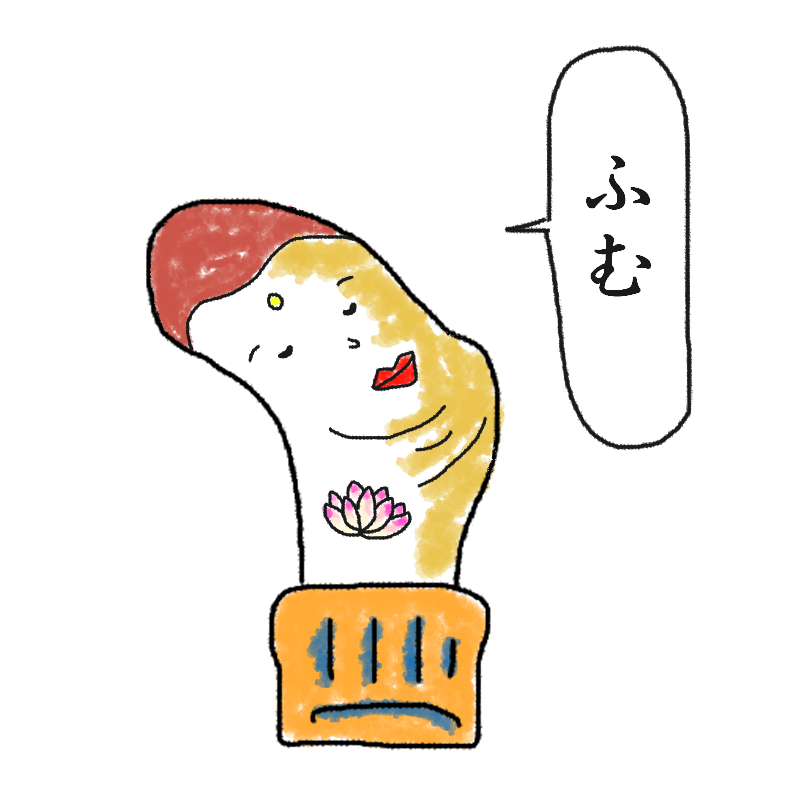

あなたの診断結果
？ ？ ？ （キャラクター名前募集中）足裏の中指にあく人
【若くして悟りと穴を開いた、
一切アドバイスをしない仏型】

「ふむ……（無言でうなづく）。まあ、すべては気の持ちようですから……。」
アドバイスはゼロ、頼りになる存在として自然と悩みを打ち明けられますが、本人は解決策やアドバイスを一切持ち合わせておらず、ただひたすら優しくうなづくだけです。
あなたは、「圧倒的な顔のうすさと自己主張のなさを誇りながら、若くしてすべてを悟ってしまった
平和主義な仏タイプ」です。
足指の真ん中という全方位からの重圧を受け止めるポジションにいながら、波風を立てることを極限まで嫌い、ただひたすら穏便に生きることを極めています。
その落ち着き払った雰囲気から、周囲からは「なんだか頼りになる存在」として自然と悩みを打ち明けられますが、本人は解決策やアドバイスを一切持ち合わせておらず、ただひたすら優しくうなづくだけです。
しかし、その「ただうなづいてくれる安心感」だけで、相談者はなぜか勝手に心を救われて勝手にスッキリして帰っていくという謎のカリスマ性を発揮します。
「なるようにしかならないよ」が口癖の、悟りを開いた令和の若き求道者です。
若き求道者（仏）の生態
- 足指の真ん中で全方位からの重圧を受け止めつつ、表情は一切ブレない
- 顔のうすさは天下一品、自己主張はゼロなのに、なぜか漂う圧倒的オーラ
- 悩みを相談されてもアドバイスは一言もせず、ただひたすら慈愛の目でうなづく
- 相談者は勝手に自己解決して「おかげで救われました！」と帰っていく謎現象
無理に言葉を尽くさなくても、そこに存在しているだけで救われる命があります。
その極限まですり減った真ん中の穴こそが、あなたがすべてを受け止めてきた証。
（※今日も今日とて、ただ静かにうなづいていこう。）
最後にひとつ。
アドバイスなんてしなくていい。
そこにただいるだけで、世界は平和だ。
若くして悟りを開きし者よ、
今日も全方位からの重力とプレッシャーを「ふむ」の一言と頷きだけで
華麗に受け流せ！
このキャラクターに名前をつける
思いついた名前を教えてね！
※このスタンプには日陰に消えたボツキャラが混ざっています
※この診断はただのお遊びです。
※靴下の穴が開く場所には個人差があります。